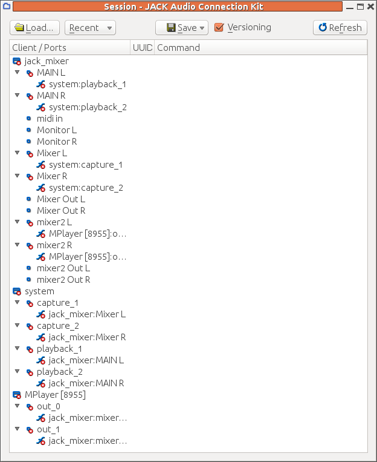

To set this up from the beginning requires
A complex sound system may consist of multiple sound sources, multiple filters and multiple outputs. If they have to be set up afresh each time they are used, then there can be errors, wasted time, etc. Session management attempts to solve these problems.
Whenever there are multiple modules linked in some way, there can be a need to
manage the modules and their linkages. These arise quite quickly in the Jack
environment, which is designed for multiple linkages.
It doesn't take a very complex arrangement of Jack modules for management to become tedious.
For example, consider the mixer session of the previous chapter:
To set this up from the beginning requires
jackd and qjackctl
jack_mixer
mplayer, which automatically connects to the playback ports
mplayer output ports from the playback ports
and reconnect them to the other set of mixer input ports
You don't want to do this every time you play a song!
The LADISH session manager identifies different levels of control of applications by session managers. Removing the explicit references to particular managers and frameworks, they are:
As Dave Phillips points out, "The use of these levels is an attempt to sort and regulate the various possible conditions for any Linux audio application. Those conditions include the degree of JACK compliance, any WINE or DOS requirements, network operation, the multiplicity of existing APIs, and so forth. "
The current batch of session management frameworks used for Linux audio includes
The existence of multiple managers means that most applications will only support the protocols of only one or at most a few. If you choose a particular manager then you will be restricted to the applications you can run under its control.
The programs jack_connect and jack_disconnect
canbe used to reconfigure connections between clients. For example,
the MIDI player TiMidity will connect its output ports to the first
available Jack input ports, which are generally the system ports connected
to the sound card. If you wish to connect TiMidity to, say,
jack-rack then its output ports have to be first disconnected
and then connected to the correct ones. On the other hand,
jack-rack does not connect to anything by default
so may need to be connected to the system ports. This is done by e.g.
jack_disconnect TiMidity:port_1 system:playback_1
jack_disconnect TiMidity:port_2 system:playback_2
jack_connect TiMidity:port_1 jack_rack:in_1
jack_connect TiMidity:port_2 jack_rack:in_2
jack_connect jack_rack:out_1 system:playback_1
jack_connect jack_rack:out_2 system:playback_2
This was the earliest successful session mananager for Linux audio but has since fallen out of use. It does not seem to be in the Ubuntu repositories any more.
One of the applications requiring LASH is jack_mixer.
Even worse, it uses the Python
LASH module from the python-lash.2.7.4-0ubuntu package.
The only copy I can find requires
a version of Python less than 2.7 and the installed version of Python
is 2.7.4. This is an application which at present will not benefit from
current session management tools - while it might run
as Level 1 with LASH, it can only run at Level 0 with other session managers.
So there are Jack applications which require LASH for session management but no such support seems to exist any more.
A list of Jack session aware applications as at 2010 is at apps supporting jack-session and Jack Session
qjackctl has a session manager which will allow you to save and restore sessions.
You save a session by clicking on the Session button and then choosing a session
name and directory.
It stores the session information as an XML file in whatever directory you save it. For the session above,
this looks like
On loading the session, it looks like

There are many red crosses - restoring a session doesn't start these particular
applications. If you re-start jack_mixer by hand,
then it establishes the links
between its MAIN output ports and system playback ports, and several of the red crosses
disappear. But it doesn't create the extra ports that we created earlier.
We need to repeat the work of creating new input ports with the right names
and then qjackctl does re-establish the connections, and more red
crosses disappear.
If we run mplayer again, it just establishes its own default
connections to the playback ports and has to be re-mapped by hand.
It doesn't even seem to meet Level 0, as qjackctl
doesn't remap its connections automatically.
The issue here is that the mplayer and jack_mixer
do not talk the Jack session management protocol.
The session manager does reset
any connections made by some applications, but not all of them.
An example is given later of adding Jack session management to an
application and then it will be restarted and reconnected properly.
LADISH is designed as the successor to LASH and is available in the repositories.
LADISH can start, stop and configure sessions. In particular, it can setup
different Jack configurations. This means that you do not start Jack and then
start LADISH, but the other way around: start the GUI tool gladish,
configure Jack and then start a session.
The process is described in the
LADI Session Handler
Wiki - follow it, in particular connecting Jack to, say, ALSA.
Otherwise you will get no sound!
See also
The LADI Session Handler
by the Penguin Producer.
Once set up, start a new Studio and then start applications from its
Applications menu. To run mplayer you need to give the full
command such as
mplayer -ao jack 54154.mp3
You can start jack_mixer from the Applications menu
and then add two new sets of input ports, as in the Jack chapter.
After reconnecting them, you end with a connection graph like
Connection graphs are stored as an XML file in $HOME/.ladish.
For example, the above graph is stored as
The full command to restart mplayer is stored in this file,
as are all the connections made.
On stopping and restarting a session, mplayer is started
with the same MP3 file, but has the default connections.
It ignores the connections of the LADISH session.
Similarly, jack_mixer is restarted, but the
additional ports have to be recreated by hand - this is not a LADISH
aware application so it runs at Level 0.
However, once created, the LADISH reconnections are made okay.
A list of LADISH-aware applications is at ladish: LADI Session Handler
From the user's viewpoint, the difference between these session managers are
From the developer's viewpoint (see later), the difference between these session managers are
List of NSM applications at NSM - Non Session Management
See the session API at trac.
Applications that can be managed by Jack Sessions (JS) may be JS aware at Level 1 or JS unaware. For the unaware ones, the best that can be done is for the session manager to maybe start and stop them. For the JS aware applications, they must be set up to
Response to a JS message will generally
JS aware clients identify themselves to the session manager by a UUID (unique universal identifier). It doesn't seem to matter what this is or how it is generated: the client application just makes it up as long as it is an integer represented as a string. This is passed to the session manager when registering, but should also be passed back to the client when it is restarted by the session manager. This is done by a command line argument to the application, and the format of the command line is also up to the client.
A simple case might be two options -u for UUID and
-f for saved state file. This would be parsed
using getopt by
int main(int argc, char **argv) {
int c;
char *file = NULL;
char *uuid = "13";
while ((c = getopt (argc, argv, "f:u:")) != -1)
switch (c) {
case 'u':
uuid = optarg;
break;
case 'f':
file = optarg;
break;
...
}
}
...
}
The application could then restore its state using the information it has previously stored in the state file, and then register again with a session manager by
jack_client *client;
client = jack_client_open("myapp", JackSessionID, NULL, uuid);
jack_set_session_callback(client, session_callback, NULL);
The callback function session_callback is invoked whenever
the session manager needs to communicate with the application. It takes
a jack_session_event and whatever was passed as the
last argument to jack_set_session_callback.
The job of the callback is then to save state information, pass information back to the session manager and perhaps exit (from trac - the session API):
int session_callback(jack_session_event_t *ev) {
char filename[256];
char command[256];
snprintf(filename, sizeof(filename), "%smyfile.state", ev->session_dir);
snprintf(command, sizeof(command),
"my_app -u %s -f ${SESSION_DIR}myfile.state", ev->client_uuid);
your_save_function(filename);
ev->command_line = strdup(command);
jack_session_reply(jack_client, ev);
if(ev->type == JackSessionSaveAndQuit)
quit();
jack_session_event_free(ev);
return 0;
}
trac suggests that if this is run in a
multi-threaded environment such as GTK, it should be run when other
threads are idle e.g. by g_idel_add.
WE can illustrate this with the delay program from the
Jack chapter. Adding in the extra code gives a revised delay.c.
I have enclosed the extra code with #ifdef JACK_SESSION
for ease in seeing the changes.
If an application is Jack session aware, then the LADISH GUI tool
gladish can manage the applicaiton as a Level 1
application. In other words, gladish can manage
Jack session and LADISH clients equally.
In that sense, there is no need to additionally add LADISH
awareness to an application unless you prefer the LADISH
way of managing sessions.
How to build LADISH-aware apps at Level 1 app examples and also see LADI Session Handler
See Non Session Management API
This chapter has looked at some of the session management systems. The situation is not particularly satisfactory and there is substantial room for improvement.